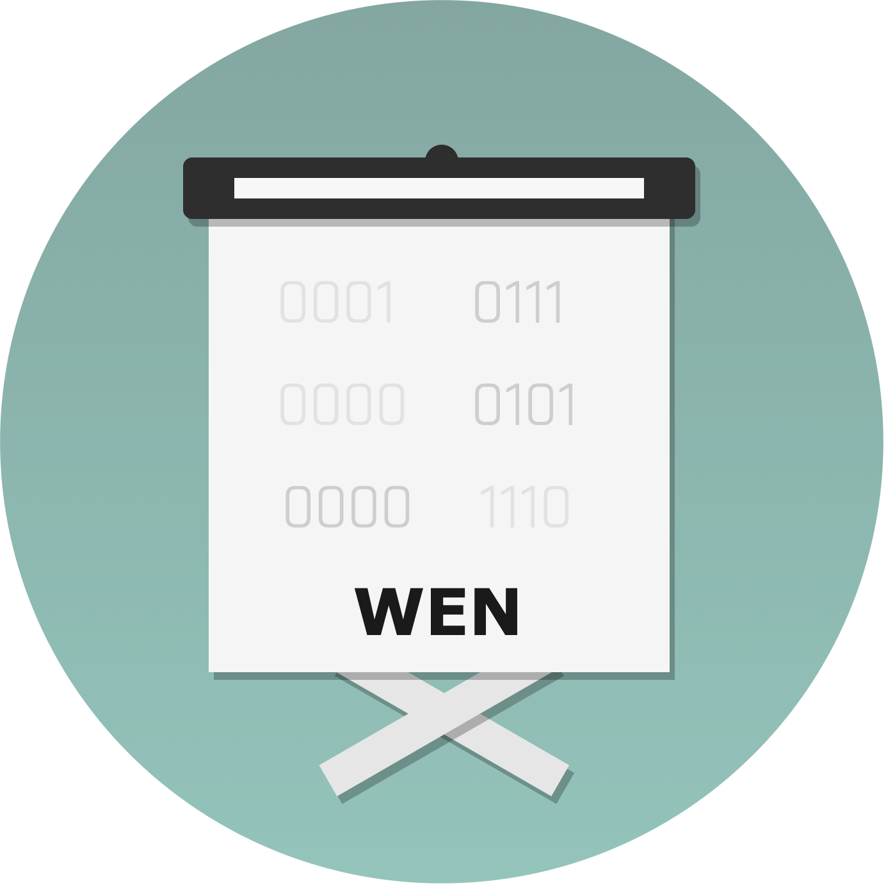
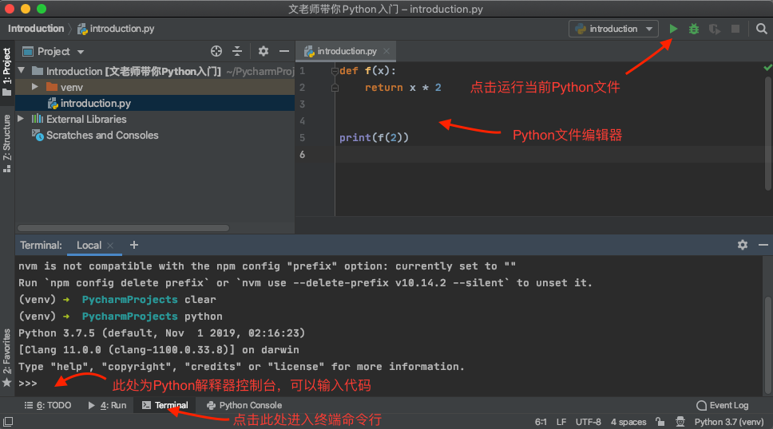

00 文老师带你Python入门

大家好，我是文科班的编程老师，简称文老师。对，文科生都开始学习Python编程了，你还有什么理由不学习。
实际问题描述
昨天，我们班的学习委员问我会不会Python。
作为文科班的编程老师，今天我来带你Python入门。
零基础入门
从高中数学说起
我们知道高中数学中的函数y = x * 2可以写成f(x) = x * 2,它代表给定一个自变量x，函数值是x的2倍。如果你理解这个，那编程入门不在话下。
接下来，请大家下载Python编程利器PyCharm，默认配置安装并打开。

如图所示，在命令行中敲下Python进入令人惊叹的解释器。接着输入（注意第二行return前有两个空格）。
1 | (venv) ➜ PycharmProjects python |
继续输入f(2), 我们会得到结果4.
1 | f(2) |
这就是一段简单的Python代码，它定义了刚才提到的数学函数，并且我们计算了当x=2时的函数值。
我们也可以使用文件编辑器来编写代码，这样更方便。
解释器中会反馈每次输入代码的执行结果。但运行Python文件时，如果文件中没有输出代码，并不会显示结果。所以如上图中所示，需要使用print(f(2))来显示计算的函数值。
Python中的方法
若使用Python术语来描述，我们称f为方法，x为方法的参数。f(2)是指调用了方法f并传入了参数值2。
方法是一段有明确目的的代码块，由关键字def来定义，使用常见字符来命名。方法可有0个或者多个参数。方法中可以使用关键字return返回数据。方法中的代码块需要缩进，因为python语言使用规则的缩进来表达层次关系。
下面的方法不需要解释，其意自明。
1 | # 求两数的平方和 |
Python中自带的print方法可以打印显示数据。
1 | print(123) |
Python中的基本数据类型
高中数学中不止有数字，也有几何图形。类似地，Python语言中除了数值数据，还有其他类型的数据。
123.456是数值Number'abcdefg'用'引起来，就是字符串String。[1,2,3,4,5]多个数据放在中括号里，那就是列表List。{1,2,3,4,5}和数学中一样，称为集合Set。('mr. wen', 666)和列表类似，称为元组Tuple。{'mr. wen': 666}形象地叫做字典Dictionary，左边是键Key，右边是值Value。
简单介绍到此，以后使用时再深入扩展。
Python中基本数学运算
我们一起来做几道题，大家猜测下结果，并在解释器中键入代码验证。
1 | print(1 + 2) |
几个需要解释的运算符
**，指数运算//，整数除法，舍弃余数%，求余数
Python中的流程控制
再来几道题，我们歌词大作战，大家预测下输出结果，并在文件编辑器中键入代码运行来验证。
1 | # 爱我的请举手 |
1 | # 一步两步三步四步 望着天 看星星 |
1 | # 黑的白的红的黄的 紫的绿的蓝的灰的 你的我的他的她的 大的小的圆的扁的 |
至此Python语言的基本概念我们已经简单介绍完了。
看来文科班的英文一如既往的棒，轻松看懂Python代码。
敲黑板，划重点
Python的基本数据类型有6种：
- Number
- String
- List
- Set
- Tuple
- Dictionary
Python中的基本数学运算：
- + - * /
- //
- %
Python代码使用固定的缩进Indent来表达层次关系。
Python使用def定义方法Method，拥有参数Argument，还可以返回Return结果。
Python的基本流程控制语句有：
if else条件分支while循环for循环